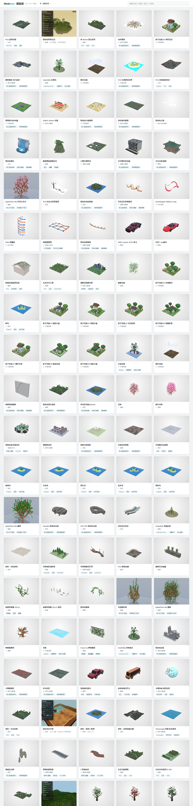
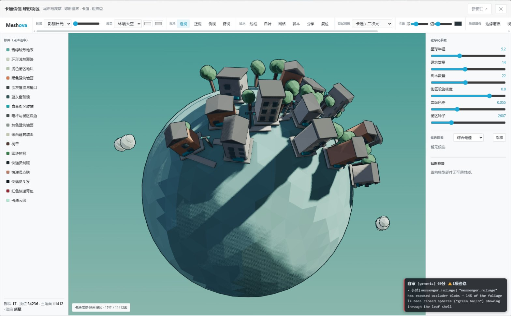
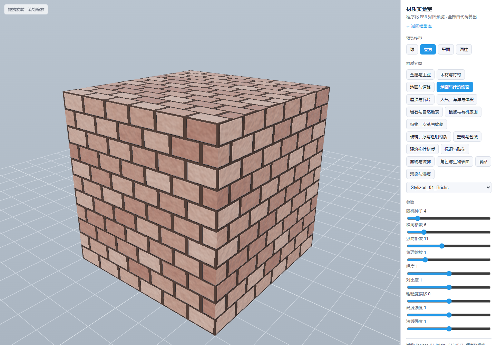
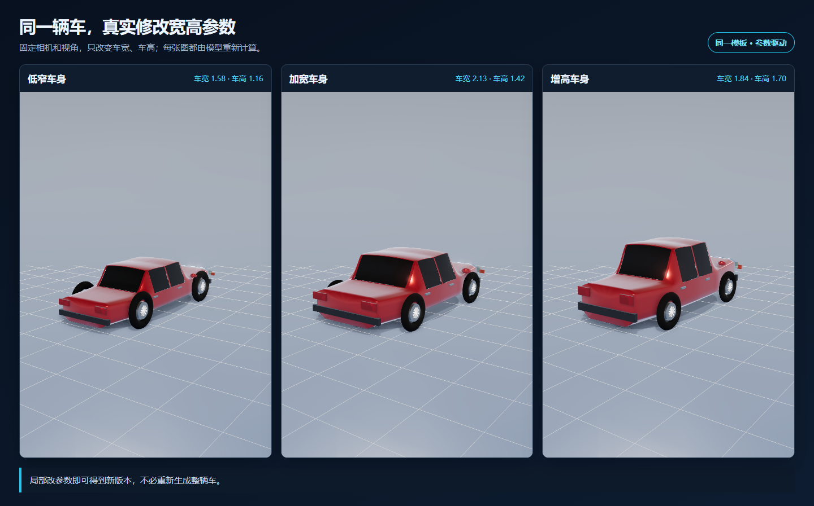
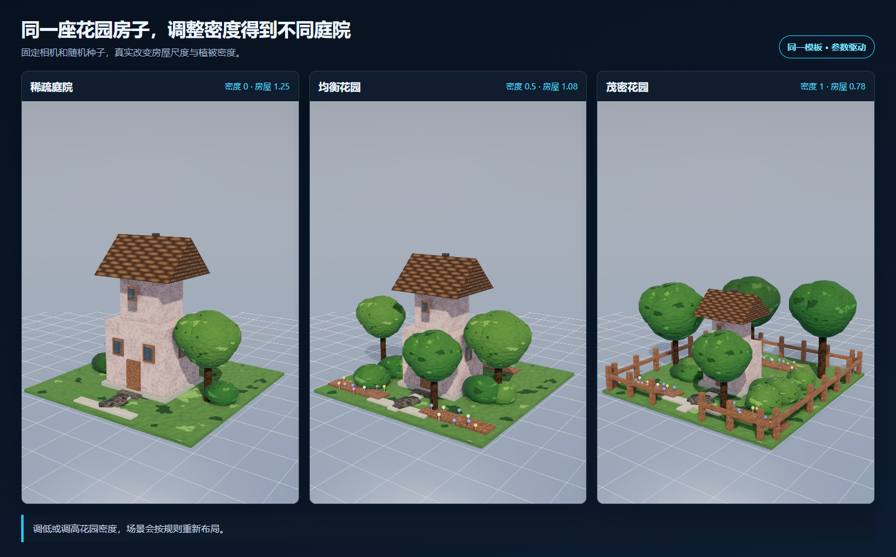
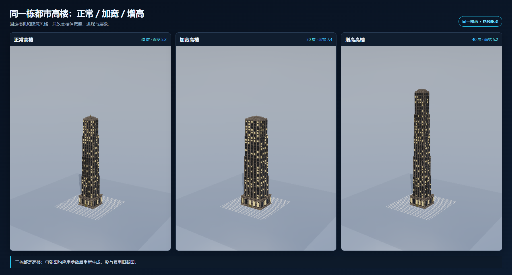

MESHOVA · WEB 程序化建模与程序化材质
AI时代的程序化建模
Meshova 用 TypeScript 描述模型和 PBR 材质。脚本可以分享、反复修改、批量生成；模板负责提供起点，参数负责产生变化。

为什么不只保存一个模型文件？
一个做好的网格当然有价值。但需求变化后，固定网格往往要重新手改：车身加长、轮胎变大、楼层增加、树枝变密，都可能牵动很多局部。
如果模型由脚本生成，修改对象就从“顶点”变成了“规则”。改一个参数，脚本重新计算，完整模型随之更新。
| 固定模型 | 程序化模型 |
|---|---|
| 保存某次结果 | 保存生成方法 |
| 修改常依赖手工编辑 | 修改参数或规则后重新生成 |
| 复制后形成许多独立版本 | 同一脚本生成一组稳定变体 |
| 分享文件 | 分享脚本、参数和 seed |
程序化建模是什么？
程序化建模，就是先写清尺寸、数量和组合规则，再由程序生成模型。改一个参数，相关部件按规则一起更新。
关键不是代码长什么样，而是参数有清楚含义。以球形街区为例，星球半径、建筑数量、树木数量和随机种子都能单独修改。人能调，AI 也能读懂。

程序化贴图是什么？
程序化贴图不先画死一张图片，而是用颜色、图案和变化规则计算表面效果。
同一套规则可以同时控制颜色、亮暗、金属感和表面凹凸。比如“生锈金属”，锈蚀程度变大后，颜色、粗糙度和细小起伏会一起变化。
图片只是计算结果，规则才是源文件。修改随机种子会改变分布，修改尺度会改变颗粒大小，修改锈蚀程度会同步影响颜色、粗糙度和表面起伏。

“模型就是脚本”带来什么？
容易分享
分享脚本、参数和 seed，即可复现同一模型。差异也能进入 Git，方便审查与回滚。
非节点化
主要格式是脚本。AI 不必反复寻找节点、接口和连线。
少花 Token
只修改相关参数或局部规则，不必重新描述和生成整个模型。
1000+ 案例
模型、材质和参数变体可以直接作为 PCG 模板继续修改。
网页直渲染
浏览器直接生成和预览，也能通过 GitHub Pages 分享。
易于校验
脚本可检查，截图可比较，修改结果能快速验证。
模板不是成品仓库，而是可生长的起点
从空白脚本开始仍有门槛。Meshova 内置 1000+ 模型、材质和参数案例。用户先选接近目标的模板，再改参数、替换部件或追加规则。
模板解决“从哪里开始”，参数解决“怎么变化”，脚本解决“如何继续扩展”。三者结合，模型库不再只是下载目录，而是一套可复用的生成知识。

同样的方法也适用于完整场景。固定随机种子，花园房子只调整房屋尺度、树木和花朵密度，就能从稀疏庭院真实重建为茂密花园。

都市高楼固定相机和风格。正常版和加宽版都是 30 层，加宽版只扩大楼体宽度和进深；增高版提升到 40 层。三栋都保持高楼体量。

从图片生成可编辑模型
图片可以作为输入。AI 先识别车身、车窗、车轮等部件，再选择接近的 PCG 模板，估计尺寸和材质，最后在网页里生成并比较结果。
输出不是难以修改的死网格，而是脚本和参数。车身太窄就改车宽，车顶太高就改车高，不必重新生成整辆车。
网页里直接生成和分享
Meshova 使用 TypeScript。AI 容易阅读和修改，系统也能检查脚本是否写错。同一套模型逻辑可以在命令行和浏览器运行。
项目发布到 GitHub Pages 后，打开链接即可查看模型、调整参数和分享结果，不必先安装完整 DCC 软件。

Meshova 想解决的，不是第一次生成
一次性生成模型已经越来越容易。更难的是第二次修改、第一百个变体、半年后的复现，以及把资产稳定接入项目。
Meshova 不追求替代 Blender、Houdini 或 Substance Designer。它更像一个面向 Web、AI 和自动化流程的开源程序化资产内核：几何与材质都由脚本描述，人负责目标和审美，AI 帮助编写与调整规则。
模型可以导出，脚本可以继续生长。需求变化时，不必重新抽一次结果，而是修改已有设计。